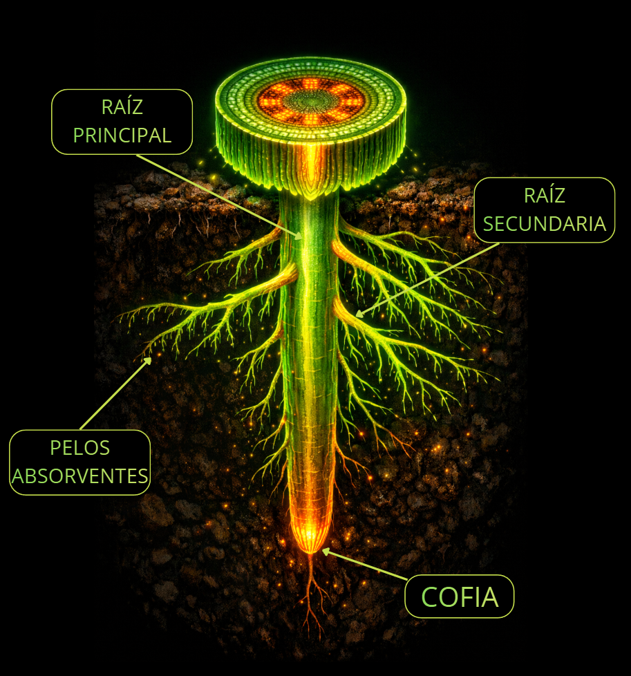
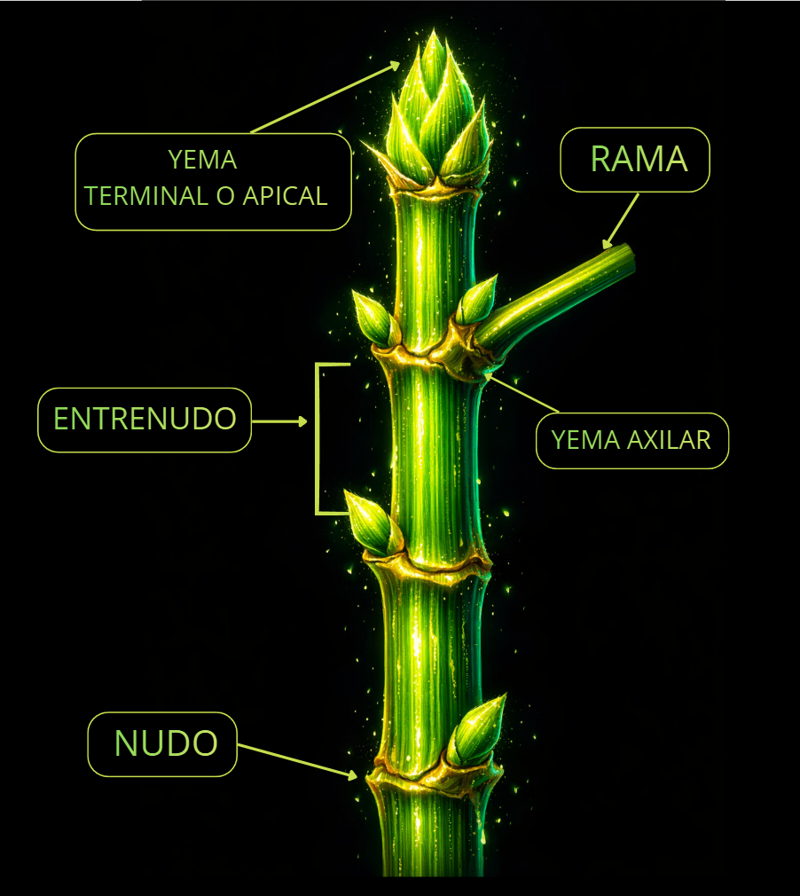
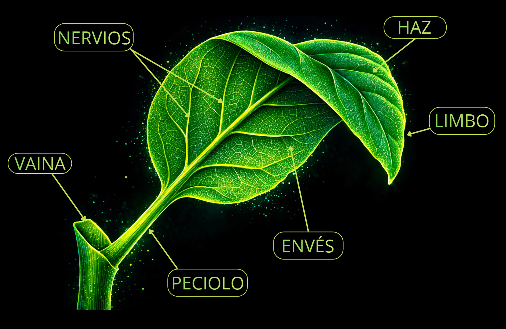
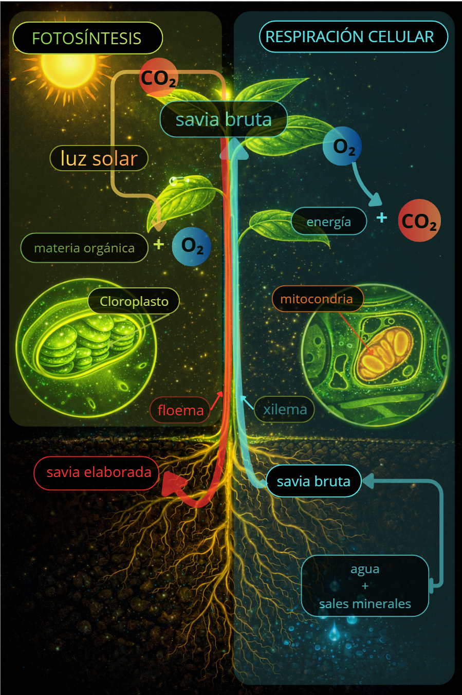
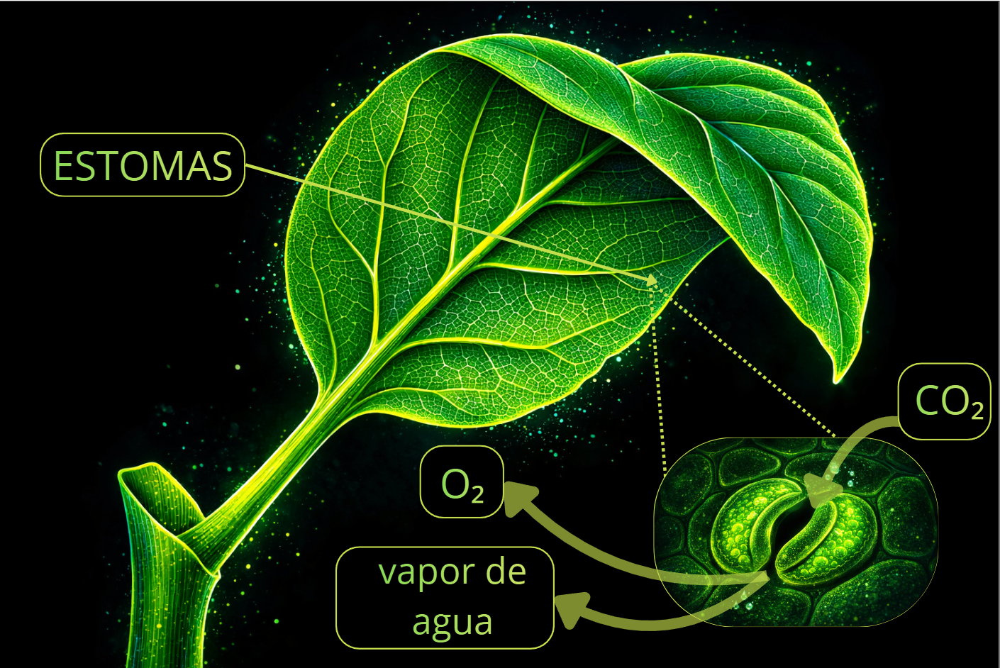
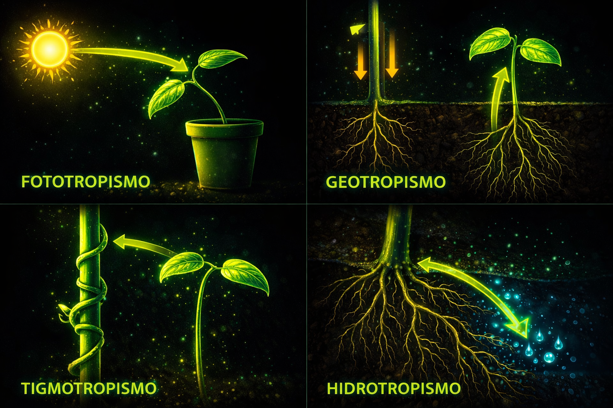
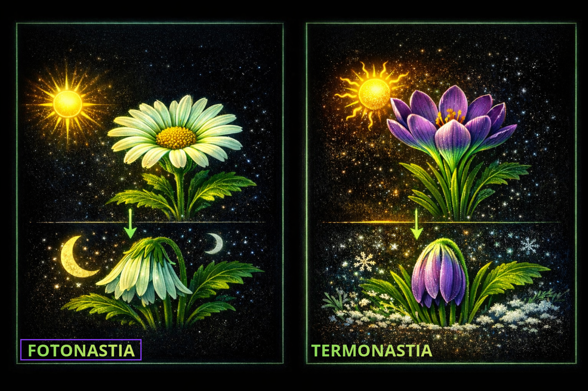
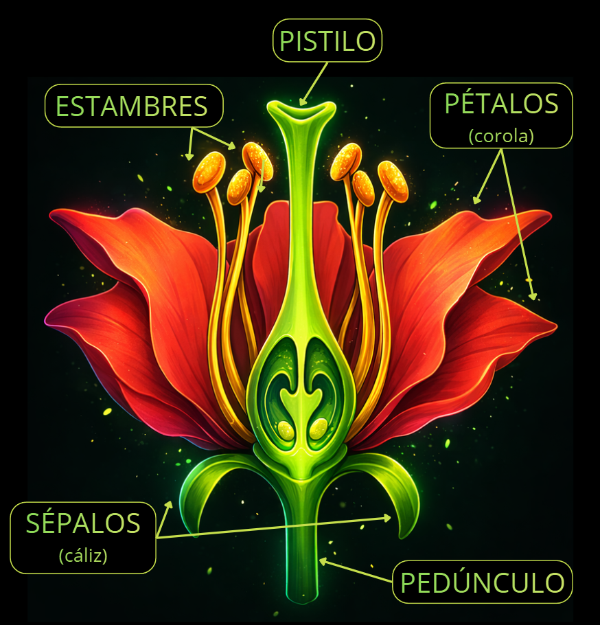
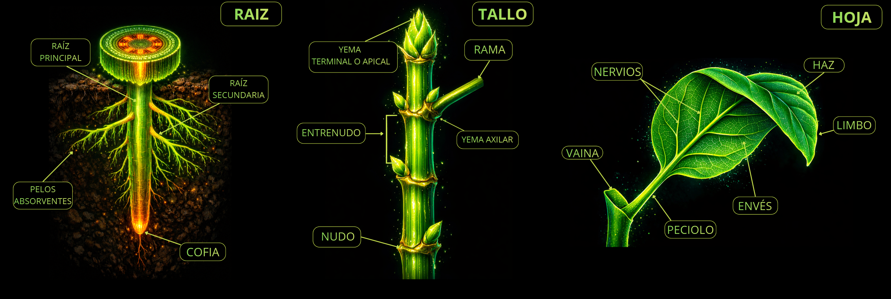

No se mueven. No gritan. No hacen nada visible. Pero llevan millones de años dominando el planeta en silencio.
Son eucariotas y pluricelulares. Sus células tienen pared celular y cloroplastos. Son autótrofas — fabrican su propio alimento a partir de agua, CO₂ y luz solar. Y viven fijas al suelo.
Características generales
¿Qué tienen en común todas las plantas?
🔬 Tipo de organismo
Pluricelulares. Formadas por muchas células eucariotas con pared celular y cloroplastos.
Eucariota
Pluricelular
🍽️ Nutrición
Autótrofas. Fabrican su propio alimento a partir de sustancias inorgánicas. No necesitan comer.
Fotosíntesis
Autótrofa
📌 Movilidad
Incapaces de desplazarse. Viven fijas al suelo. Pero responden a estímulos (tropismos y nastias).
Inmóvil
Sésil
🌍 Importancia
- Producen la mayor parte del O₂
- Absorben CO₂ atmosférico
- Son los productores de los ecosistemas
- Evitan la erosión del suelo
Sin plantas no habría cadenas alimentarias. Todo lo que come cualquier animal — incluso los carnívoros — depende en última instancia de que alguien haya hecho fotosíntesis.
Clasificación
De las más antiguas a las más evolucionadas
🌊 Sin semillas — reproducción por esporas
Musgos y hepáticas — las más sencillas. Sin vasos conductores, sin raíz/tallo/hojas verdaderos. Absorben agua por todo el cuerpo. Viven en lugares húmedos y sombríos.
Sin vasosHúmedoEsporas
Helechos — más grandes. Tienen vasos conductores. Presentan rizoma (tallo subterráneo), frondes (hojas) y raíces a lo largo del rizoma.
Con vasosRizomaFrondes
🌱 Con semillas — Espermatófitas
| GIMNOSPERMAS | ANGIOSPERMAS |
|---|---|
| Semillas en piñas (desnudas) | Semillas en frutos (protegidas) |
| Flores pequeñas, poco llamativas | Flores vistosas y coloridas |
| Hoja perenne | Hoja perenne o caduca |
| Pinos, abetos, cipreses | Encinas, tulipanes, árboles frutales |
Los helechos llevan más de 360 millones de años en la Tierra. Existían antes que los dinosaurios. Los pinos de hoy son casi iguales a los que pisaban los tiranosaurios.
Partes de la planta
Cada parte tiene su función. Ninguna está de adorno.
🌿 Raíz

Generalmente subterránea, estructura ramificada.
- Absorbe agua y sales minerales del suelo
- Fija la planta al suelo
- Almacena sustancias de reserva
Pelos absorbentesAnclajeReserva
La zanahoria y la remolacha son raíces con tanto almacén de reservas que nos las comemos.
🌲 Tallo

Partes clave: nudos (donde nacen hojas y ramas), yemas axilares (crecimiento lateral), yema terminal (crecimiento en longitud).
- Transporta savia bruta y elaborada
- Sostiene la planta
- Expone hojas a la luz
- Almacena sustancias
XilemaFloemaYemas
🍃 Hojas

Expansiones en forma de lámina, verdes por la clorofila. El lugar donde ocurre todo lo importante.
- Fotosíntesis
- Intercambio gaseoso (por los estomas)
- Transpiración
ClorofilaEstomasFotosíntesis
Nutrición
Del suelo a la luz. Una cadena perfecta.

1
💧 Absorción
Los pelos absorbentes de la raíz toman agua y sales minerales del suelo. Se mezclan y forman la savia bruta.
2
🔼 Transporte
La savia bruta sube por el xilema hasta las hojas. En las hojas, la fotosíntesis la transforma en savia elaborada, que baja por el floema al resto de la planta.
3
🌞 Fotosíntesis
H₂O + CO₂ + luz solar → O₂ + materia orgánica
Se realiza en los cloroplastos. La clorofila capta la luz. Parte del O₂ la usa la planta; el resto se libera al exterior.
4
🔋 Respiración celular
En las mitocondrias de todas las células. La planta obtiene energía a partir de materia orgánica + O₂. Produce agua y CO₂. Las plantas respiran todo el rato, igual que tú.
5
💨 Intercambio gaseoso
A través de los estomas — orificios en las hojas. Intercambian O₂, CO₂ y vapor de agua con el exterior.

De noche las plantas no hacen fotosíntesis — solo respiran. Por eso el aire del bosque a primera hora de la mañana es especialmente fresco: llevan toda la noche respirando y toda la mañana produciendo O₂.
Función de relación
Las plantas no se mueven... pero responden.

TROPISMOS — respuestas permanentes
Cambios permanentes en el crecimiento. Positivo: hacia el estímulo. Negativo: en dirección contraria.
FOTOTROPISMO
Respuesta a la luz. El tallo crece hacia ella (positivo). Las raíces, al revés (negativo).
GEOTROPISMO
Respuesta a la gravedad. Raíces hacia abajo, tallo hacia arriba.
TIGMOTROPISMO
Respuesta al contacto. Las plantas trepadoras se enrollan alrededor de apoyos.
HIDROTROPISMO
Respuesta al agua. Las raíces crecen hacia donde hay humedad.

NASTIAS — respuestas temporales
Cuando desaparece el estímulo, la planta vuelve a su estado anterior.
FOTONASTIA
Respuesta a la luz. Flores que abren de día y cierran de noche.
TERMONASTIA
Respuesta a la temperatura. El tulipán abre con calor y cierra con frío.
La Mimosa pudica cierra sus hojas en milisegundos al tocarla. Es tigmotropismo — una nastia de contacto tan rápida que puedes verla en tiempo real.
Reproducción sexual
De flor a planta nueva. El ciclo completo.
🌺 La flor — estructura reproductora

Envoltura floral: cubre y protege.
- Corola → conjunto de pétalos
- Cáliz → conjunto de sépalos
Órganos reproductores:
- Estambres → producen polen (♂)
- Pistilo → contiene el ovario con óvulos (♀)
1
🐝 Polinización
El polen viaja desde los estambres de una flor hasta el estigma de otra. Transportado por viento o por animales (abejas, mariposas, pájaros...).
2
🔗 Fecundación
El grano de polen forma un tubo polínico que recorre el pistilo hasta el óvulo. El gameto ♂ se une al óvulo ♀. Fecundación lograda.
3
🌰 Formación de la semilla
El óvulo fecundado se convierte en semilla. Contiene el embrión y cubiertas protectoras.
4
🍎 Formación del fruto
El ovario se transforma en fruto. Protege las semillas y colabora en su dispersión.
5
🌱 Germinación
La semilla cae al suelo. Si hay suficiente humedad, absorbe agua y se hincha hasta romper la cubierta. Aparece la radícula (primera raíz) y luego los cotiledones (primeras hojas). Comienza la nueva planta.
Las semillas pueden sobrevivir cientos de años esperando las condiciones ideales. En 2012 se germinó una semilla de 30.000 años encontrada en permafrost siberiano.
Paso 1 de 7 · Características
Las plantas
son raras.
Y geniales.
🌿
son raras.
Y geniales.
Producen la mayor parte del oxígeno del planeta y son la base de todas las cadenas alimentarias terrestres. Sin plantas, en unos miles de años el aire sería irrespirable.
Paso 2 de 7 · Clasificación
No todas
tienen semillas.
🍃
tienen semillas.
Las más antiguas — musgos, hepáticas y helechos — se reproducen por esporas. Sin flores, sin frutos, sin semillas. Solo esporas.
Luego vinieron las plantas con semillas. Las gimnospermas las guardan en piñas, desnudas. Las angiospermas las protegen dentro de frutos y se anuncian con flores de colores.
Luego vinieron las plantas con semillas. Las gimnospermas las guardan en piñas, desnudas. Las angiospermas las protegen dentro de frutos y se anuncian con flores de colores.
Los helechos llevan en la Tierra más de 360 millones de años. Existían antes que los dinosaurios — y siguen aquí.
Paso 3 de 7 · Partes
Raíz, tallo,
hoja. Cada una
manda en lo suyo.
🪴
hoja. Cada una
manda en lo suyo.
La raíz absorbe agua y sales del suelo, ancla la planta y almacena reservas. La zanahoria que comes es literalmente una raíz llena de almidón.
El tallo transporta, sostiene y expone las hojas a la luz. Tiene nudos (donde nacen ramas y hojas) y yemas (donde crece).
Las hojas son la fábrica. Clorofila verde, fotosíntesis constante, estomas para respirar.
El tallo transporta, sostiene y expone las hojas a la luz. Tiene nudos (donde nacen ramas y hojas) y yemas (donde crece).
Las hojas son la fábrica. Clorofila verde, fotosíntesis constante, estomas para respirar.

Una sola hoja puede tener más de 100.000 estomas por centímetro cuadrado. Cada uno se abre y cierra de forma independiente.
Paso 4 de 7 · Nutrición
Agua + CO₂
+ luz = magia.
☀️
+ luz = magia.
La fotosíntesis es la ecuación más importante de la vida en la Tierra:
H₂O + CO₂ + luz → O₂ + materia orgánica
Ocurre en los cloroplastos. La clorofila capta la luz. El agua y las sales suben por el xilema desde la raíz. La savia elaborada baja por el floema al resto de la planta.
Y sí: las plantas también respiran, en las mitocondrias, todo el rato — exactamente igual que tú.
H₂O + CO₂ + luz → O₂ + materia orgánica
Ocurre en los cloroplastos. La clorofila capta la luz. El agua y las sales suben por el xilema desde la raíz. La savia elaborada baja por el floema al resto de la planta.
Y sí: las plantas también respiran, en las mitocondrias, todo el rato — exactamente igual que tú.
De noche las plantas solo respiran, no hacen fotosíntesis. Por eso el bosque huele especialmente bien al amanecer: llevan horas acumulando O₂ fresco.
Paso 5 de 7 · Relación
Inmóviles.
Pero no
indiferentes.
🌀
Pero no
indiferentes.
Las plantas responden a su entorno. Los tropismos son movimientos permanentes de crecimiento: hacia la luz (fototropismo), contra la gravedad (geotropismo), hacia el agua (hidrotropismo), hacia el contacto (tigmotropismo).
Las nastias son respuestas temporales — cuando desaparece el estímulo, la planta vuelve a su estado original. Las flores que abren y cierran según la luz (fotonastia) o la temperatura (termonastia).
Las nastias son respuestas temporales — cuando desaparece el estímulo, la planta vuelve a su estado original. Las flores que abren y cierran según la luz (fotonastia) o la temperatura (termonastia).
La Mimosa pudica cierra sus hojas al instante si la tocas. Es tigmotropismo tan rápido que parece animado. Búscala en YouTube — es fascinante.
Paso 6 de 7 · La flor
La flor
no es decorativa.
Es un plan.
🌺
no es decorativa.
Es un plan.
La flor es la estructura reproductora de las plantas con semillas. La envoltura floral (corola + cáliz) protege lo importante: los estambres producen el polen — gametos masculinos — y el pistilo contiene el ovario con los óvulos — gametos femeninos.
Los colores y olores son publicidad. Atraen polinizadores para que transporten el polen.
Los colores y olores son publicidad. Atraen polinizadores para que transporten el polen.
Las flores y los insectos coevolucionaron. Llevan 130 millones de años adaptándose mutuamente — por eso hay tantas formas y colores de flores: cada una optimizada para su polinizador.
Paso 7 de 7 · Reproducción
De semilla
a planta.
El ciclo completo.
🌱
a planta.
El ciclo completo.
El polen llega al estigma → forma un tubo polínico → gameto ♂ se une al óvulo → semilla (embrión + cubiertas protectoras) → ovario se convierte en fruto.
La semilla cae al suelo. Si hay humedad suficiente, absorbe agua, se hincha, rompe la cubierta. Sale la radícula (primera raíz) hacia abajo. Salen los cotiledones (primeras hojas) hacia arriba. Empieza una nueva planta.
La semilla cae al suelo. Si hay humedad suficiente, absorbe agua, se hincha, rompe la cubierta. Sale la radícula (primera raíz) hacia abajo. Salen los cotiledones (primeras hojas) hacia arriba. Empieza una nueva planta.
Algunas semillas pueden sobrevivir miles de años esperando las condiciones adecuadas. En 2012 se germinó con éxito una semilla de 30.000 años encontrada en permafrost siberiano.
1 / 7